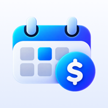

NextchargeSupport
Email: [CONTACT_EMAIL]
Please include your iPhone model, iOS version and the app version (Settings → About).
Frequently asked questions
Does Nextcharge cancel my subscriptions?
No. Nextcharge only tracks and reminds. “Mark as Cancelled” updates the app — cancel the subscription with the provider yourself.
I’m not getting reminders.
Open Nextcharge → Settings and make sure Notifications is on. If it’s off, allow notifications for Nextcharge in the iPhone Settings app. You can also change the reminder time there. Opening the app now and then keeps upcoming reminders scheduled.
Why are totals marked with “≈”?
Subscriptions in other currencies are converted to your currency with daily Central Bank of Azerbaijan rates. Your bank’s conversion may differ slightly.
How do I restore Nextcharge Pro on a new iPhone?
Sign in with the same Apple Account, open Nextcharge → Settings and tap “Restore Purchases”.
Is Nextcharge Pro a subscription?
No. It’s a one-time purchase that also includes future Pro features.
How do I change the app language?
Nextcharge → Settings → Language.